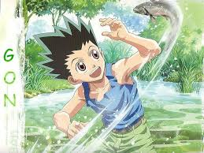
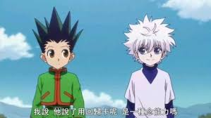
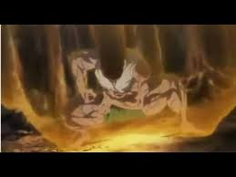

故事大綱
主要講述名為小傑·富力士的12歲少年尋找父親——金·富力士的故事。「獵人」（HUNTER）一詞是故事所設定的世界中的社會超級菁英。

獵人試驗篇
（No.001－038）、動畫第一作1－31(TV)、動畫第二作1－21
自小生長在鯨魚島的小傑小時候因誤入母狐熊的勢力範圍，就快要被攻擊時，一名路過、名叫凱特的男子救了他。原來凱特是他的父親──金的徒弟，
凱特告訴小傑許多關於他的父親及獵人相關的事情，因此小傑對金及獵人這個職業有很大的憧憬。他在考試的過程中結識酷拉皮卡、雷歐力、奇犽等
好友，並與西索結下再戰之緣。最後，小傑通過試驗成為獵人。

貪婪之島篇
（No.120－185）、動畫第一作71－92(OVA第二期、第三期)(完結)、動畫第二作59－75
小傑與奇犽進入由金與他的朋友們所製作──獵人專用的夢幻電玩遊戲《貪婪之島》，當他們進入遊戲之沒過多久就見識到此遊戲的危險之處──並遇到
了神祕少女比司吉，她看不下去小傑和奇犽的戰鬥方式，要他們拜自己為師，之後兩人在比司吉的指導下修行並且一路闖關，在最後打倒了貪婪之島
中的兇惡玩家甘舒，並取得一百張卡片、破關成功。

嵌合蟻篇[編輯]
（No.186－318）、動畫第二作76－136
小傑與奇犽使用破關獎品打算去找金。但是在那裏等著的並不是金，而是凱特。凱特他們在未確認生物的探索和調查中，發現巨型嵌合蟻的殘骸，一行人前往NGL。
小傑和奇犽瞭解嵌合蟻的強大，在凱特的犧牲下逃出NGL。在討伐隊還尚未準備完全之際，王誕生了。王率領直屬護衛隊和一部份士兵，在背後統治東果陀共和國，
打算進行『選別』（挑選）。為了防止更多的人死亡以及為凱特報仇，小傑一行人再次向嵌合蟻挑戰。
排行
|
| 第一 | 職業獵人 |
| 第二 | 史上最強的第子兼一 |
| 第三 | 火影忍者 |